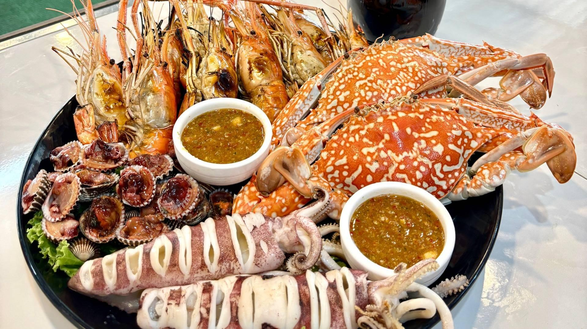

อาหารและของฝากจังหวัดประจวบคีรีขันธ์
ชิมอาหารพื้นเมือง อิ่มอร่อยกับอาหารทะเล สัมผัสวิถีชีวิตชุมชน และเลือกซื้อของฝากจากท้องถิ่น

ตลาดอาหารพื้นเมืองและของฝาก
ตลาดอาหารพื้นเมืองเป็นแหล่งรวมสินค้า และอาหารจากชุมชน มีทั้งอาหารทะเลแปรรูป อาหารแห้ง น้ำพริก และของฝากหลากหลายชนิด เหมาะสำหรับนักท่องเที่ยวที่ต้องการ เลือกซื้อสินค้าและสัมผัสวิถีชีวิตท้องถิ่น
อาหารและของฝากแนะนำ
- กุ้งแห้ง: อาหารทะเลแปรรูปที่สามารถนำมา ประกอบอาหารได้หลากหลายชนิด
- ปลาแห้ง: ผลิตภัณฑ์จากปลาที่สามารถเก็บรักษา ไว้รับประทานได้นาน
- ปลาหมึกแห้ง: เหมาะสำหรับนำไปประกอบอาหาร หรือซื้อเป็นของฝาก
- น้ำพริก: มีให้เลือกหลายชนิด เช่น น้ำพริกกุ้งและน้ำพริกปลาทู
- กุนเชียง: อาหารแปรรูปที่สามารถนำไปทอด หรือประกอบอาหารได้หลายเมนู
จุดเด่นของตลาด
- มีอาหารและของฝากให้เลือกหลากหลาย
- สามารถเลือกซื้อสินค้าจากร้านค้า ภายในตลาดได้โดยตรง
- ช่วยสนับสนุนผู้ประกอบการท้องถิ่น และสร้างรายได้ให้แก่ชุมชน
- เหมาะสำหรับซื้อของฝาก ให้ครอบครัวและเพื่อน
คำแนะนำในการเลือกซื้อ
ควรตรวจสอบความสะอาดของสินค้า บรรจุภัณฑ์ วันหมดอายุ และเปรียบเทียบราคาก่อนตัดสินใจซื้อ

ต่ายกาแฟโบราณ
ร้านกาแฟโบราณที่มีเมนูอาหารเช้า และเครื่องดื่มแบบดั้งเดิม มีทั้งกาแฟ ชาไทย โอวัลติน และไข่ลวก เหมาะสำหรับแวะรับประทานอาหารเช้า ก่อนออกเดินทางท่องเที่ยว
เมนูแนะนำ
- ไข่ลวก: เมนูอาหารเช้าที่รับประทาน คู่กับเครื่องดื่มได้
- กาแฟโบราณ: กาแฟแบบดั้งเดิมที่มีกลิ่นหอม และรสชาติเข้มข้น
- ชาไทย: เครื่องดื่มที่มีกลิ่นหอม และรสชาติหวานมัน
- โอวัลติน: เครื่องดื่มรสมอลต์ รับประทานคู่กับอาหารเช้าได้
- โอเลี้ยง: เครื่องดื่มกาแฟดำเย็นแบบโบราณ
ราคาอาหารและเครื่องดื่ม
| เมนู | ราคา |
|---|---|
| เนสกาแฟ | 20 บาท |
| กาแฟโบราณ | 20 บาท |
| ชาไทย | 20 บาท |
| โอวัลติน | 20 บาท |
| ไข่ลวก 2 ฟอง | 20 บาท |
| นมหมี | 25 บาท |
จุดเด่นของร้าน
- มีอาหารเช้าและเครื่องดื่มแบบดั้งเดิม
- ราคาเมนูตามภาพเริ่มต้น 20 บาท
- เหมาะสำหรับแวะรับประทานอาหารเช้า
- ได้สัมผัสบรรยากาศร้านค้าท้องถิ่น
หมายเหตุ: ราคาอ้างอิงจากภาพเมนู และอาจมีการเปลี่ยนแปลง

อาหารทะเลสด
จังหวัดประจวบคีรีขันธ์เป็นจังหวัดชายทะเล ที่มีอาหารทะเลหลากหลายชนิด ทั้งกุ้ง ปู ปลา หอย และปลาหมึก สามารถนำมาประกอบอาหารได้หลายเมนู นักท่องเที่ยวสามารถสัมผัสรสชาติ อาหารทะเลและอาหารท้องถิ่นได้
เมนูอาหารทะเลแนะนำ
- กุ้งเผา: กุ้งย่างหอม ๆ รับประทานคู่กับ น้ำจิ้มซีฟู้ดรสจัดจ้าน
- ปูม้านึ่ง: เนื้อปูมีรสหวานตามธรรมชาติ รับประทานคู่กับน้ำจิ้มซีฟู้ด
- ปลาหมึกย่าง: ปลาหมึกย่างที่มีกลิ่นหอม และเนื้อสัมผัสเหนียวนุ่ม
- ปลากะพงทอดน้ำปลา: ปลาทอดกรอบราดด้วยน้ำปลาปรุงรส
- ต้มยำทะเล: อาหารทะเลปรุงรสเปรี้ยวเผ็ด พร้อมสมุนไพรไทย
- หอยเชลล์ย่าง: หอยเชลล์ปรุงสุก มีกลิ่นหอมและรสชาติกลมกล่อม
จุดเด่นของอาหารทะเล
- มีวัตถุดิบและเมนูให้เลือกหลากหลาย
- มีรสชาติเป็นเอกลักษณ์ ของอาหารท้องถิ่น
- สามารถรับประทานอาหาร พร้อมชมบรรยากาศริมทะเลได้ ในร้านที่มีวิวทะเล
- ช่วยสนับสนุนชาวประมง และผู้ประกอบการในชุมชน
คำแนะนำในการรับประทาน
ควรเลือกร้านอาหารที่สะอาด ใช้วัตถุดิบสดใหม่ ปรุงอาหารให้สุก และสอบถามราคาก่อนสั่งอาหาร เนื่องจากราคาอาหารทะเล อาจเปลี่ยนแปลงตามฤดูกาล
หมายเหตุ: ราคาอาหารทะเลขึ้นอยู่กับชนิด ขนาด น้ำหนัก และราคาของแต่ละร้าน